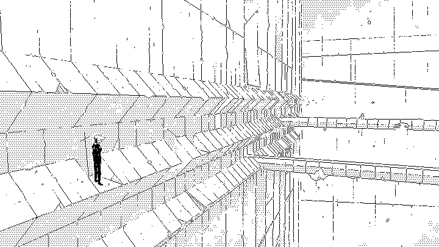
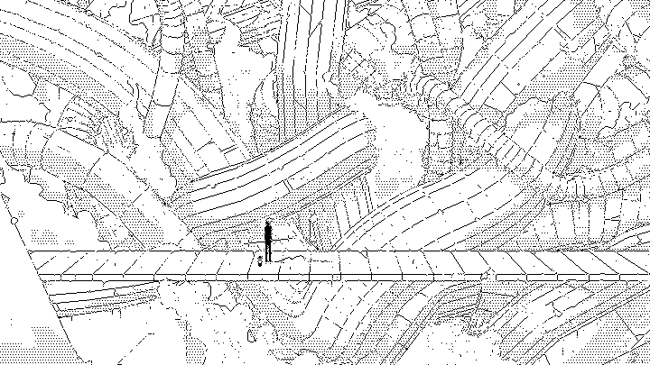
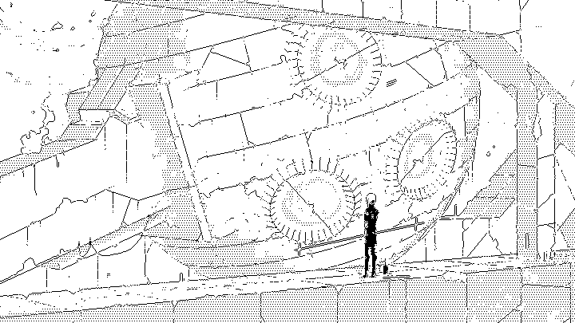

Daily photographs from the inhabited ages of Dinaisth,
updated each day during the month of October 2019.

Returning to Duomo, from Saarafores, entering via the hidden slip gate.
What is left of the limnal spaces.
Visited the weather beaten safe by the Kanikule shores.
..
The constructors operating in this sector have never connected the junction to Vertale.
Waiting out of the storm by the Kanikule shore.
Looking for a signal, from the top of the Whiinders.
The only way across is via the exposed route creeping along the outside walls.
The connection between the Dilitrielth drains and the Es Rive has been severed.
Reached the disused station, the system controls have turned to dust.
Descended to the basin's shore, there used to be a bridge across, but it must have sunken.
Offline.
Rapidly cutting through the frozen station.
Descent toward the frozen lower floors, where the compressor sleeps.
Entering the hangars of the Neon Hermetists.
Heading toward Eaurizon.

Resting while the food reactor to establishes contact.
Repairing the giant capture mirrors.

Anchored by the Duomic shore.
Waiting for the storm to pass.
Crossing from Laeisth to Duomo via the hanging road.

In transit.
Preparing the flighter for the journey back toward the shores of Kanikule.
Walking through forgotten levels and across their disused vents.

Resting in ghostly Duomo while the reactor recharges.
Reached the limits of the automated builders; these districts will never be finished.

Ascending the labyrinthine tunnels beneath the surface of Known Magye.
After its rescue from the Vetetrandes ruins, the compressor arrives in Dilitrielth.

Architects of the ancient bridge connected our two societies by cutting across the ancient astrolab.

We have finally received the stabilizers from the builder districts.
And walk among long dappled grass,
And pluck till time and times are done
The silver apples of the moon,
The golden apples of the sun.
— Ray Bradbury

The castle of Andes(Laeisth, surface)

The collapse of Yajnev(Vetetrandes, surface)
Deep in my dream the great bird whispered queerly
Of the black cone amid the polar waste;
Pushing above the ice-sheet lone and drearly,
By storm-crazed aeons battered and defaced.
— H. P. Lovecraft
Built in Poodle | Drawn in Noodle | Cropped in Moogle
Devine Lu Linvega, Inktober 2019
Siouxsie & The Banshees - Cities in Dust